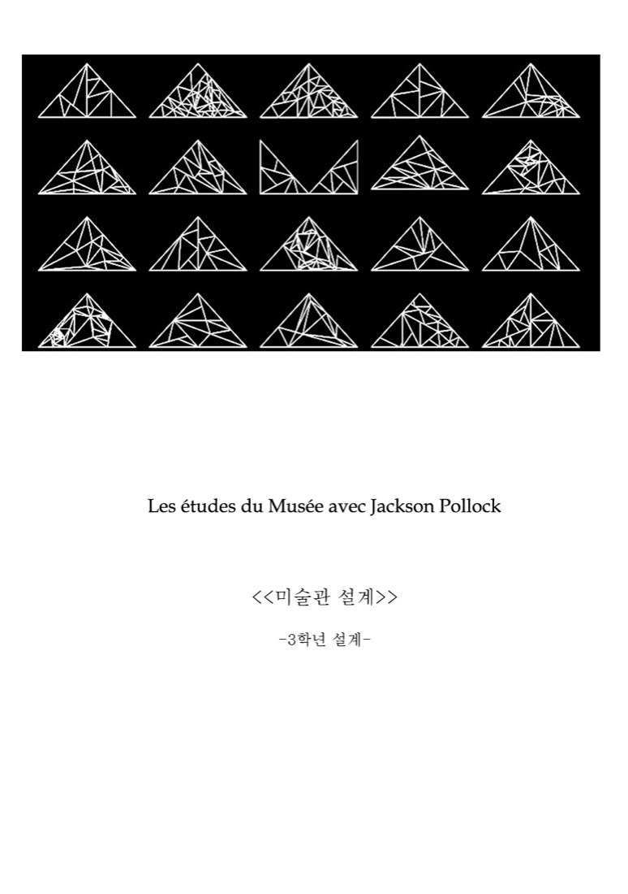
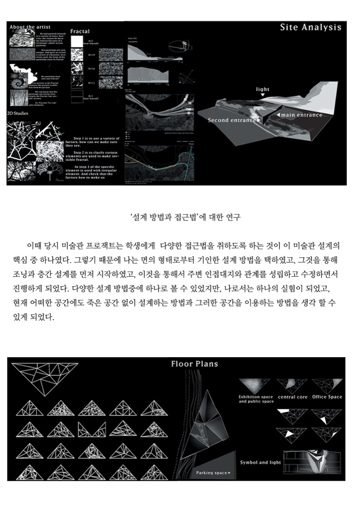
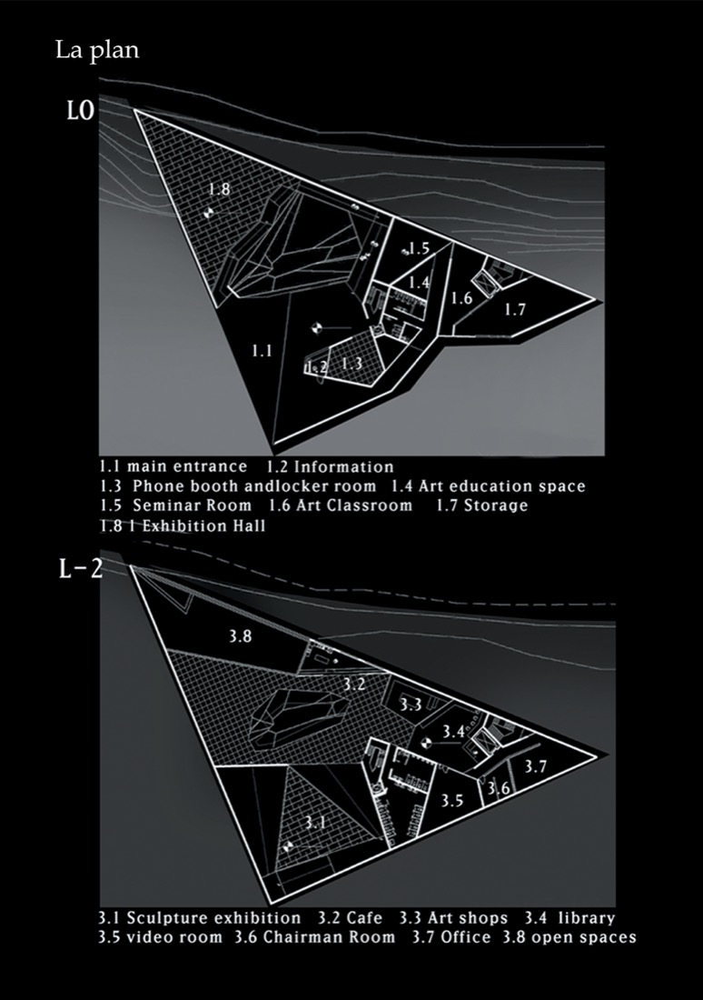
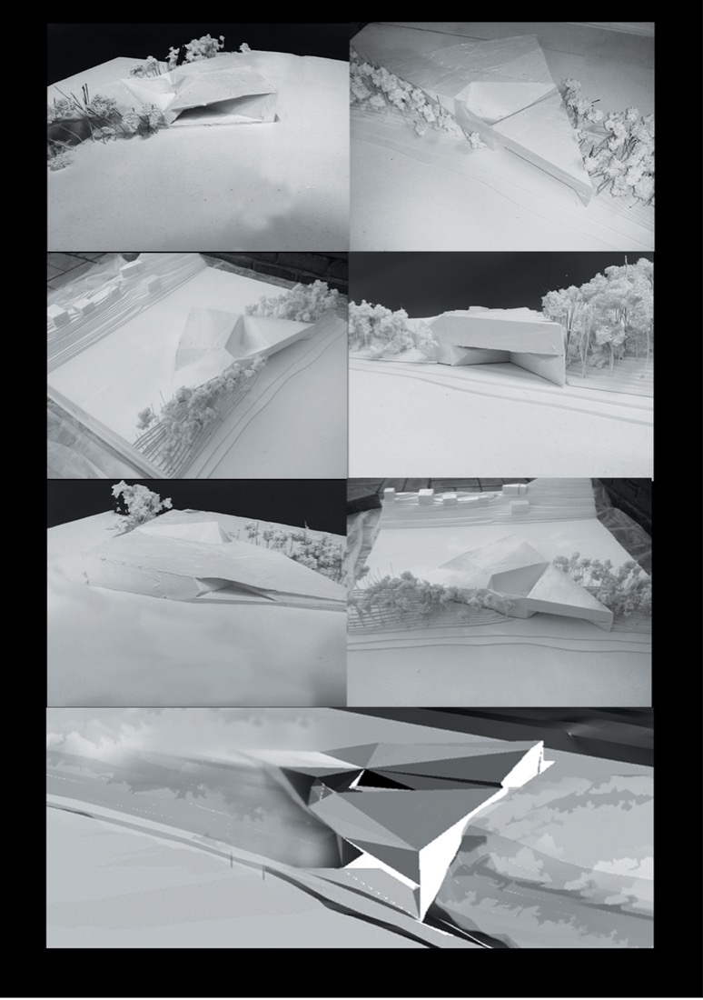

미술관 설계는 건축에서의 면을 이루는 최소한의 단위 ‘삼각형’을 두고 고민한 설계이다. 이는 건축을 하는 사람으로서 욕심이자, 하나의 바램이였다.
예각, 둔각 등 건축가에게는 피하고 싶은 공간이자 하나의 도전의 목표가 될 수 있다 생각하였다. 이를 풀고 충분히 사용할 수 있다면, 어떤 공간의 형태라도 풀 수 있겠다는 생각이 앞섰다.
하지만 그와 동일하게 공간에 대한 욕심은 잭슨 폴록이라는 미술가를 선정한 이유 중에 하나였다. 그의 도전과 실험은 설계를 진행할 수 있는 하나의 이유가 되었고, 자유로운 설계를 할 수 있는 근본이 되었다.

이때 당시 미술관 프로젝트는 학생에게 다양한 접근법을 취하도록 하는 것이 이 미술관 설계의 핵심 중 하나였다. 그렇기 때문에 나는 면의 형태로부터 기인한 설계 방법을 택하였고, 그것을 통해 조닝과 층간 설계를 먼저 시작하였고, 이것을 통해서 주변 인접대지와 관계를 성립하고 수정하면서 진행하게 되었다.
다양한 설계 방법 중에 하나로 볼 수 있었지만, 나로서는 하나의 실험이 되었고, 현재 어떠한 공간에도 죽은 공간 없이 설계하는 방법과 그러한 공간을 이용하는 방법을 생각할 수 있게 되었다.

